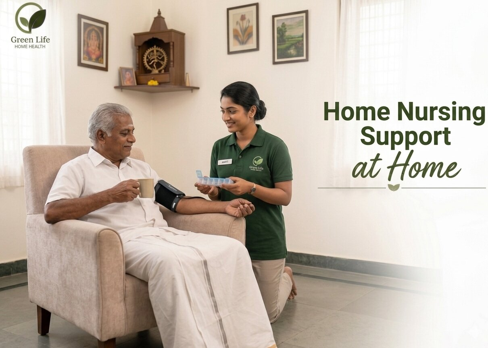

Caregiver Checks
Caregivers are matched based on service need, patient condition and shift expectations.
From Chennai, Green Life supports families who want dependable care at home without losing warmth, dignity or clear communication.
Green Life Home Health Care was created to make home care feel more dependable, personal and less confusing for Chennai families. When a parent, child or recovering patient needs support, families should be able to speak to someone who understands both clinical care and family emotion.
Led by Mr. K. Sridhar B.Sc (N), MBA, Green Life combines nursing experience, operational discipline and a practical understanding of home-based patient needs. The goal is simple: help families feel safe, informed and respected through every stage of care.

At Green Life Home Health Care, every service is planned around the patient’s dignity and the family’s peace of mind. Our team understands that home healthcare is not only about tasks, medicines or routines. It is about trust, patience and being present when families need steady support.
From our Chennai care desk, we coordinate care across Chennai with a focus on trained caregivers, hygiene-led routines, clear updates and respectful patient handling.
Good home healthcare needs skilled hands, clean routines and a reassuring voice for the family. These are the standards we keep visible in every service.
Caregivers are matched based on service need, patient condition and shift expectations.
Families can call or WhatsApp for urgent coordination and guidance.
Bedside routines are planned around patient comfort, cleanliness and safety.
Located in Chennai and serving families across the city.
Simple communication helps families stay confident during ongoing care.
Share the patient condition with us. We will guide your family toward the most suitable home care option.